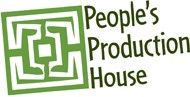

People's Production House

Location:
New York, NY
At People’s Production House we are fulfilling the promise of citizen and community journalism by closing the gap in skills and access.
We believe a diverse, ethical, and independent media is an essential element of social change and we believe that historically excluded communities must be protagonists in media democracy. Our work combines media creation, media policy education and media organizing to preserve and expand the free press so central to America’s identity and democracy.
PPH is run and staffed by journalists and community organizers from historically excluded communities. Our projects are unique as we bring together two of the best American traditions: community organizing and independent media creation, to build a community of media organizers: media literate youth and workers who can create and demand a media that functions in their interests.
Supported Projects
Digital Expansion Initiative Program Developer
Kristofer Rios
7/2008 — 7/2010
PPH has three major projects: Radio Rootz, which teaches classes in radio journalism and media literacy in public schools; the Community News Production Institute (CNPI), which trains low wage and immigrant workers as radio journalists; and our Digital Expansion Initiative, which works to educate and organize the public around access to digital technology. We build media organizers: media literate youth and workers who can create and demand a media system that works in their interests.
This position is part of the Digital Expansion Initiative. For 2008 to 2009, the CTC Vista participant will
• formalize our Digital Expansion curriculum and conduct educational workshops for community organizations and public school classes throughout New York City;
• work with the Digital Expansion team to analyze data from our surveys and interviews;
• conduct original research into the state of Internet access in New York City and train others to do the same;
• record, edit, and produce radio journalism and train others to do the same;
• review and compile new research and articles related to Internet access and Internet policy.
This year, Kristofer took the lead in developing and formalizing the curriculum for our youth-led policy program, the Digital Expansion Fellowship (DEF). After taking feedback and evaluations from our first DEF summer project, Kristofer redesigned the summer curriculum into a full 8-week summer course for a new round of fellows. The new curriculum is a comprehensive training in media policy research; combing basics in digital journalism and an introduction to policy analysis. This summer the fellows used their newly acquired digital reporting skills to examined mobile broadband and cellphone policy from a community perspective. They produced a news feature looking at how a proposed bill requiring ID for prepaid cellphones would impact low income and immigrant communities. They also produced four cell phone literacy workshops that will be included in a collaborative tool kit project focused on expanding cell phone literacy.
People’s Production House proposed a large community media network project during the second application round of the Broadband Technology Opportunity Program. Our proposal brought together 21 New York City community organizations to imagine a constellation of community media centers across New York that would work as media production centers for a community news outlet. Kristofer was the main outreach organizer for this application. He helped recruit many of the organizations to the project proposal and coordinated a lot of the application process with the groups. While we weren’t awarded our BTOP grant, the organizing provided us with an opportunity to advance our goal of strengthening our community media network. We are taking the momentum from our BTOP organizing to develop a New York City Digital Justice Coalition. Throughout the year, Kristofer also engaged with other community media organizations to share or work, exchange ideas, and collaborate on larger national projects.
One of the goals that Kristofer set for him self was to help us develop workshops and training materials in Spanish. Kristofer lead our first Spanish language community journalism training in his first year as a VISTA and he wanted to take it further by developing media literacy tools that could accompany the trainings. This year Kristofer helped organize the first Spanish language track at the 2010 Allied Media Conference. In developing the Spanish language track, Kristofer engaged some organizations that serve the Spanish speaking in New York, helping to develop Spanish language community reporters.
In addition to the work completed in our project proposal, Kristofer also helped refine our 12-week media community journalism training curriculum. The curriculum needed an upgraded and he assisted with the process. Kristofer also helped strengthen ties to partner organizations through his involvement in organizing the Allied Media Conference and his participation in the Media Action Grassroots Network. Through these conferences and networks, Kristofer has helped facilitate projects on a national scope, including our upcoming Cellphone Literacy Toolkit, which is a collaboration between allies in New Mexico, California, and New York.
Digital Expansion Initiative Program Developer
Alexis Walker
6/2007 —
The Digital Expansion Initiative uses participant-led media production, education, and organizing to expand meaningful access to all New Yorkers. The VISTA will support the project by producing and helping others produce radio and by conducting research.
- Develop a comprehensive understanding of the barrier to technology access in poor communities in New York City by training members of 5 - 10 non-profit organizations to research and report on the state of Internet access in their organizations and among their constituencies
- Produce and distribute community-produced content documenting the state of Internet access in New York City as a way to engage new constituents in the development of broadband infrastructure of programs to bridge the digital divide
- Based on community-produced content, produce and distribute comprehensive report on barrier to Internet access in New York City
- Build a new constituency of engaged and conversant experts on community access technology, based in communities with no or limited access to technology, and the capacity to continue expanding that constituency
During her year of service, Alexis served as the program associate for a new program: the Digital Expansion Initiative. In this capacity, she served as support for the program - maintaing contact records and contacting organizations for partnerships, consolidating data, researching articles and resources, updating website content, conducting audio interviews, administering a written survey, writing articles on public policy of telecommunications, and presenting the initiative’s finding and methods in workshops around NYC and the country.
Related Content
None created yet!